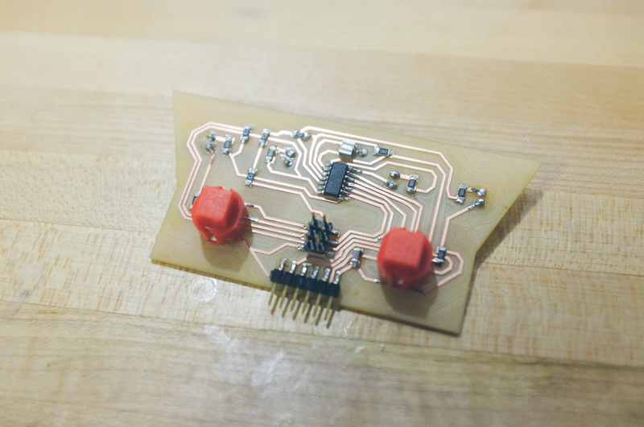
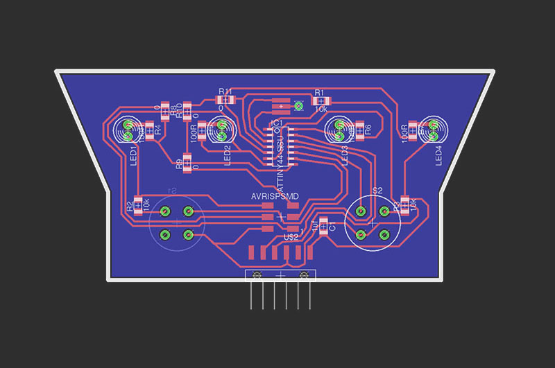
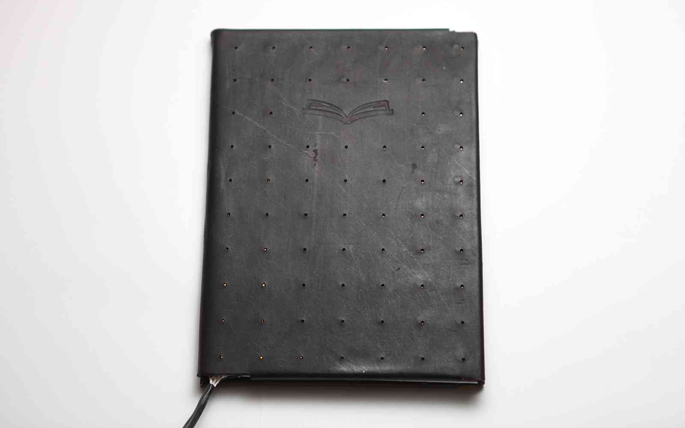

I began learning how to work with custom circuit boards both on the programming and fabrication side. I've worked on a few projects that have incorporated the things I've learned so far, but here are a few good examples.
This first, albeit meta, project focused on creating a programming chip from a single-layer copper board, soldering some surface-mount components, and then finally programming it to run smoothly.
From there I dove into learning how to use Eagle, one of the more widely used circuit board design tools and used it to create a "simple" board that measures capacitance on a pole.
The next project progressed to controlling a few led's using two buttons. It was a lot easier with the full-sized already-built arduino but things get trickier once you go custom from the ground up
- 

- 
The last iteration to date gets rid of the buttons and opens up the leds to being controlled over a cable by another chip or another computer. This creates the groundwork for a bicycle taillight project I'm working on that also doubles as a turn signal.
The video below shows the simplified communication level where I send a number over the usb connection that then prompts the device to cycle through "left turn", "right turn", and "braking". Future revisions will have more led's, better animations, and possibly wireless.
Basic Networking Boards
Two-node serial communicated board set
Finally, I wrote a nicer more graphical interface for testing and playing with the board.
Working with Leather & Electronics
Madeline: Physical Prototype
Rough prototype of the leather, led-infused cover

Through physical prototyping I was able to create an interactive model of a new type of digital photo album. Its mix of classic and modern aesthetics uses a leatherbound cover integrated with an array of leds. Download the Eagle file of the circuit board I designed or view the arduino code for the pulsing wave array effect on Github.

- 